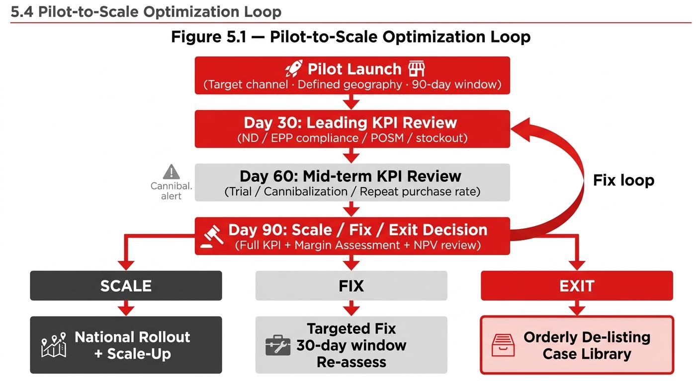

Chapter 07
Chapter 5 Performance Measurement & Optimization
Effective performance management for recruitment and affordability packs requires a three-horizon KPI architecture. Leading indicators identify early signals within the first 30 days; mid-term indicators confirm whether the recruitment mechanism is working at 60–90 days; lagging indicators assess long-term business impact at 6–18 months.

Playbook Chapter
Chapter 5 Performance Measurement & Optimization
5.1 KPI Architecture
Effective performance management for recruitment and affordability packs requires a three-horizon KPI architecture. Leading indicators identify early signals within the first 30 days; mid-term indicators confirm whether the recruitment mechanism is working at 60–90 days; lagging indicators assess long-term business impact at 6–18 months.
KPI Category | Indicator | Definition | Target Benchmark | Review Cadence |
|---|---|---|---|---|
LEADING (Day 14–30) | Numeric Distribution (ND) | % of target outlets with the pack on-shelf / in-cooler | ≥60% in W1; ≥80% in W4 | Weekly |
LEADING | EPP Compliance Rate | % of audited outlets selling at or below EPP | ≥85% in W2 | Weekly (outlet audit) |
LEADING | POSM Compliance Rate | % of outlets with correct POSM placed | ≥80% in W2 | Weekly (merchandising) |
LEADING | Stockout Rate | % of target outlets out-of-stock on launch SKU | <5% at all times in W1–W4 | Daily (pilot; weekly post-pilot) |
MID-TERM (Day 30–90) | Trial Rate | % of target non-buyers who purchased the pack at least once in pilot period | ≥15% of target non-buyer segment in pilot outlets | Monthly |
MID-TERM | Cannibalization Rate | Volume transferred from existing packs as % of new pack volume | <30% (benchmark; adjust to market) | Monthly |
MID-TERM | Repeat Purchase Rate | % of trial buyers who purchased again within 4 weeks | ≥20% of trial buyers | Monthly |
MID-TERM | Incremental Transactions | New transactions above pre-launch baseline in pilot outlets | ≥target volume (from business case) | Monthly |
LAGGING (6–18 months) | Penetration Uplift | Change in % of households purchasing the brand in pilot geography vs. control | Per business case target (typically +1–3pp in year 1) | Quarterly (panel data) |
LAGGING | NSR per Case vs. Forecast | Actual NSR per case vs. business case assumption | Within ±5% of business case | Quarterly |
LAGGING | System GP Impact | Incremental GP generated by the pack net of cannibalization and trade investment | Positive at Year 2; target per business case | Bi-annual |
LAGGING | Pack Graduation Rate | % of recruitment pack buyers who subsequently purchased a higher-margin frequency or convenience pack | To be set market-specific; indicative ≥10% in Year 1 | Annual |
5.2 Incrementality Judgment Framework
The single hardest analytical challenge in recruitment pack measurement is distinguishing genuine incrementality from cannibalization and redistribution. This framework provides a structured approach.
Observed Pattern | Likely Interpretation | Recommended Action |
|---|---|---|
New pack volume up; existing entry pack volume flat or up; total brand transactions up | Genuine recruitment: new consumers entering the brand. Ideal outcome. | Scale: expand distribution; protect EPP; monitor for mix dilution as volume grows |
New pack volume up; existing entry pack volume down by similar magnitude; total transactions flat | Cannibalization: new pack replacing existing pack with no net consumer gain. High risk. | Fix: diagnose which consumer segment is switching (non-buyer or existing buyer). If primarily existing buyers, reconsider pack architecture. |
New pack volume up; existing entry pack volume down; total transactions up moderately | Mixed: partial recruitment + partial cannibalization. Most common outcome. | Diagnose: quantify split. If incremental rate exceeds cannibalization threshold, continue and optimize. If not, Fix or Exit. |
New pack volume up; higher-margin packs volume down; margin per case eroding | Mix dilution: pack is trading down existing consumers, not recruiting new ones. | Fix or Exit: critical signal. Investigate whether EPP positioning is too attractive relative to frequency packs. May require price adjustment or channel separation. |
New pack volume below target; existing packs flat; no distribution gain | Execution failure: pack not reaching target consumer. Not a strategy failure yet. | Fix execution: diagnose against 5 non-negotiables. Address the specific gap. |
5.3 Scale / Fix / Exit Decision Matrix
Decision | Trigger Conditions | Required Action | Timeline |
|---|---|---|---|
SCALE | Volume ≥80% of business case target at 90 days; cannibalization within threshold; EPP compliance ≥85%; repeat purchase rate ≥20%; system GP positive or on track | Expand ND to Tier 2 outlets; increase production capacity; develop full national launch plan; schedule 6-month and 12-month milestone reviews | National rollout plan within 30 days of Scale decision |
FIX | Volume 50–80% of target; one or two specific failure modes identified (e.g., EPP compliance or POSM compliance below threshold); cannibalization tracking in range | Identify the specific non-negotiable failure; develop targeted corrective action plan; re-run 30-day pilot in corrected configuration; re-evaluate at next cycle | 30-day fix window; re-assessment within 60 days |
EXIT | Volume <50% of target after Fix cycle has been attempted; OR cannibalization exceeds threshold and no corrective action available; OR system GP structurally negative at any reasonable volume projection | Orderly de-listing: customer communication plan; trade investment recovery; portfolio rebalancing; lessons learned documentation for Case Library (Ch.6) | Exit decision implemented within 30 days; portfolio review within 60 days |
5.4 Pilot-to-Scale Optimization Loop
5.5 KPI Governance and Reporting Cadence
Reporting Level | Frequency | Audience | Content |
|---|---|---|---|
Outlet / Distributor | Weekly (pilot phase) | Sales Lead / Trade Marketing | ND, EPP compliance, POSM compliance, stockout rate, sell-through vs. target |
Market RGM | Monthly | RGM Lead / Commercial Director | Full KPI dashboard: all leading + mid-term indicators; cannibalization first read; corrective actions if off-track |
Senior Leadership | Quarterly | GM / VP Commercial / CFO | Volume vs. plan; NSR impact; GP contribution; Scale/Fix/Exit status; next-cycle plan |
Regional / Global RGM | At milestone: 90-day and 12-month | Regional RGM / Global RGM CoE | Business case vs. actuals; incrementality assessment; lessons for Case Library; replication potential for other markets |
5.6 Key Assumptions and Risk Flags
Key Assumption: The KPI architecture in this chapter assumes that outlet-level sell-out data is available for the pilot geography within 14 days of the sales event. In markets where distributor sell-in is the primary available data (common in Vietnam GT and Cambodia rural GT), trailing sell-in may be used as a proxy with a 10–15% adjustment for inventory held at distributor level. This limitation must be disclosed in all performance reporting.
[FLAG: additional input required — Georgia (EMEA) and Turkey cases demonstrate that Affordability SKU List (ASL) tracking at the outlet level — monitoring numeric penetration, VPO, and CDE doors — provides an effective governance mechanism for affordability pack performance even without advanced panel data. This model should be reviewed for applicability in Cambodia and Vietnam GT contexts.]